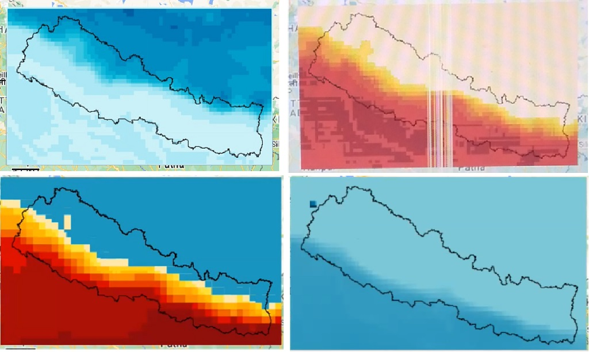
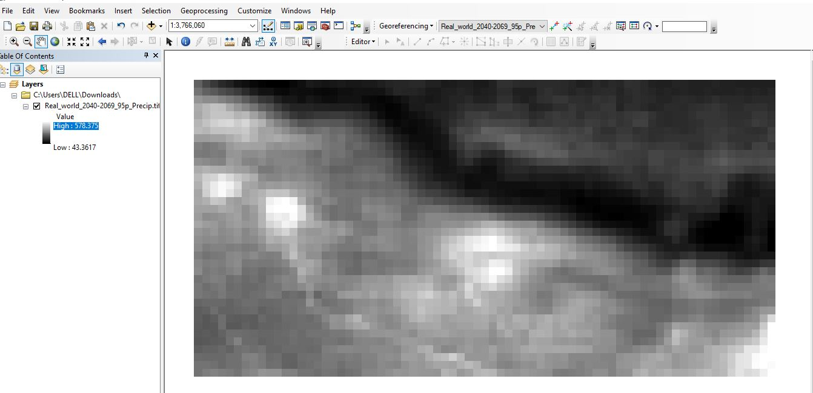
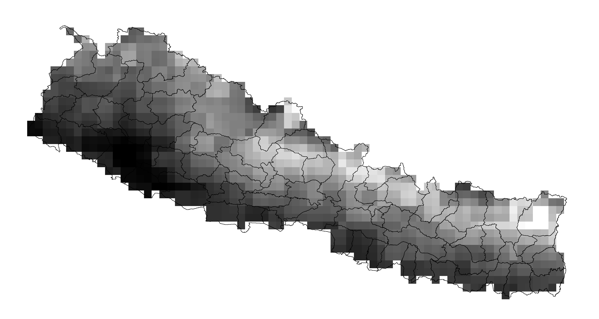
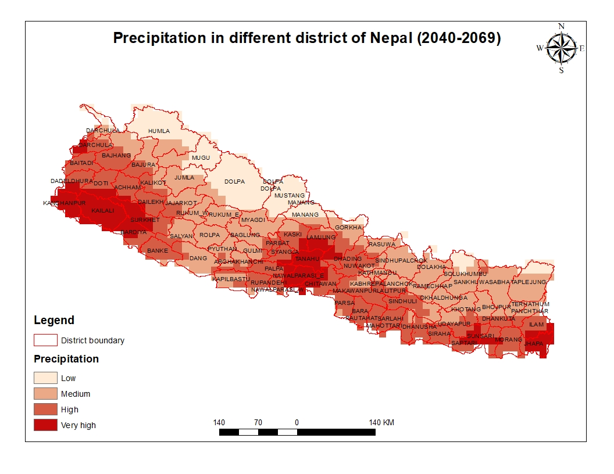

4 Participant Maps
September Workshops
Participants created their own maps with the climate data.
Map within Google Earth Engine by Keshav Dubedi (top left), Lalita Joshi (top right), Damber Bista (bottom left), and Abash Paudel (bottom right).

Geotiffs that have been exported and can now be imported into any mapping software as demonstrated by Bipin Bhattarai.

Arbin Poudel applied his previous experience with GIS to clip his geotiff to Nepal.

Suraj Bist applied his previous experience with GIS to enhance his final map.
